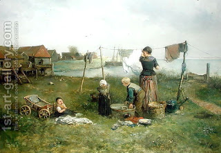

Zevachim 93 - Spattered Blood
Levi asked, "If blood spattered from a garment to another garment, does the second garment require laundering in the Courtyard? Or maybe the blood becomes invalid when landing on the first garment, and then the second garment does not need laundering?"
Rabbi Yehudah the Prince answered, "Great question! But I will answer either way: if the blood is still valid, the garment needs laundering, and if it is invalid, then I follow Rabbi Akiva to say that since it was valid at some time, it still makes the garment liable to laundering." However, in truth the law is not like Rabbi Akiva, and thus Levi's inquiry remains unresolved.
If the blood spattered directly from the neck onto the garment, it does not require laundering. Similarly, if it spattered from the horn of the Altar, from its base, or if it spilled on the floor and was gathered up, the garment does not require laundering. It only requires laundering when the blood was received in a sacred vessel first, and then spattered on a garment.
Art: Jan Mari Henri Ten Kate - Hanging Up the Washing